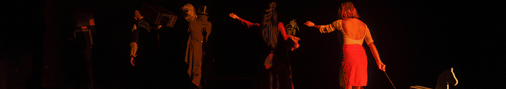
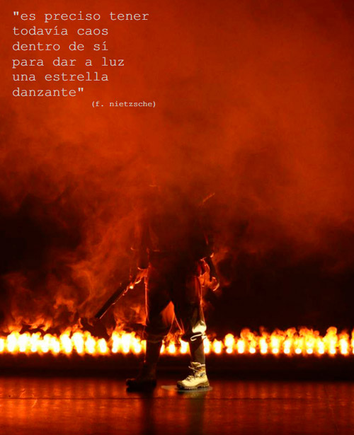

Información: (+57) 350 215 11 00 (WhatsApp)

- 30 Festival Internacional de Teatro El Gesto Noble en El Carmen de Viboral
- Festival de Teatro Mujeres en Escena 2025
- Festival de Teatro Comfama San Ignacio 2025
Incertidumbre y muerte Por Analucía Isaza Molina
 |
|
El siglo XX estalló en las vanguardias como un grito contra las certezas que se precipitaban al abismo. nuestro tiempo parece habitar en las crestas sordas de esa explosión: continúa el estruendo, pero ya queda poca perplejidad. en esas aguas imprecisas, el Teatro Matacandelas clava su nueva estaca con incertidumbre, un poema dramático que renuncia a la comodidad de la anécdota para convertirse en un collage de despojos. inspirada en sus santos patrones —Brecht, Vian y Tzara—, la pieza nos sumerge en la conciencia de un «hijo» que no es un personaje, sino una generación que se alza contra las instituciones que lo formaron —la escuela, la iglesia, la familia—, reveladas ahora como edificios en corrupción. la escena se puebla de voces que son esquirlas de un mundo roto, un mapa del desconcierto donde la única rebelión posible es el rechazo lúcido y la pregunta por el verdadero sabor de la vida.
Nacido el 16 de abril de 1896 en Rumanía.
Fundador del movimiento dadaísta.
Una respuesta radical a la Primera Guerra Mundial.
Un rechazo a la lógica, a la moral, al arte burgués, y a las ideologías que conducen a la barbarie.
Para Tzara, el dadaísmo fue un grito contra la locura que nadie oye.
La huida. Poema dramático. Publicado en 1946, después de la Segunda Guerra Mundial. Refleja el horror de la guerra, el exilio, la tiranía, y la alienación.
Un eco de un cuerpo, que va hacia una huida interior. La representación del hombre frente al terror de la gran disolución: la guerra.
Nacido el 10 de marzo de 1920 en Francia. Su obra es un espejo, donde la imaginación, el absurdo, y la sátira, revelan los intrincados pliegues de la condición humana.
Las hormigas Cuento. Publicado en 1949. Un funeral. Soldados en el campo de batalla. La deshumanización. La mecánica implacable del conflicto. La lucha por la supervivencia, abandonando cualquier nombre propio. El lado oscuro del deber. La aniquilación del ser humano.
La hierba roja Novela. Publicada en 1950. Confrontación con el orden, la identidad, la familia, la religión, la educación. La búsqueda del verdadero sabor de la vida.
El desertor Canción antimilitarista. Publicada en 1954. Un himno pacifista. La deserción como acto supremo de libertad.
Nacido el 26 de septiembre de 1888 en Estados Unidos. Poeta del desarraigo espiritual. De la modernidad rota. De la espera. El constructor de ruinas.
Four Quartets. Un poema en cuatro tiempos. Tiempo del mundo. Tiempo del alma. Tiempo sin tiempo.
East Coker, parte III, 1940. Las tinieblas como un umbral. Un espiral. No hay desesperación. Las tinieblas no ciegan. Nos devuelven al cuerpo. Al oído. Al temblor.
Es un descenso. Es abrir un camino. Es el despojo, soltarlo todo. No es una caída. Es una rendición.